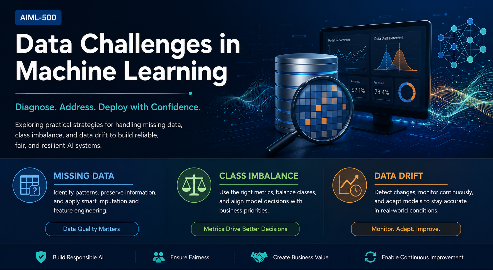

Professional Portfolio · Artifact 4
Data Challenges in Machine Learning
Building Reliable, Fair, and Production Ready Machine Learning Systems
This applied case analysis examines how data quality, evaluation choices, and production monitoring influence reliable machine learning systems.

Value Proposition
This artifact demonstrates my ability to solve practical machine learning challenges commonly encountered in production environments. Rather than focusing only on model accuracy, I analyze data quality, evaluation metrics, operational constraints, fairness, and long-term model reliability. My approach combines technical problem solving with business awareness, enabling organizations to build AI systems that are accurate, scalable, trustworthy, and maintainable throughout their lifecycle.
Project Overview
This artifact presents my analysis of three common challenges that can affect the reliability of machine learning systems: missing data, class imbalance, and data drift. Through realistic business scenarios, I evaluated the causes and consequences of each problem and proposed practical strategies for improving model performance, fairness, and long-term reliability.
The activity strengthened my ability to look beyond a model’s overall accuracy and consider data quality, operational limitations, business priorities, and production monitoring. It also demonstrates how technical decisions must be connected to the people and organizations affected by an AI system.
Learning Objectives
Identify patterns and possible causes of missing data.
Select appropriate methods for imputation and feature engineering.
Evaluate imbalanced models using suitable performance metrics.
Balance fraud detection performance with operational review capacity.
Recognize covariate drift and concept drift.
Design monitoring and retraining strategies for production models.
Connect machine learning decisions with business and ethical considerations.
Skills Demonstrated
Machine Learning Lifecycle Workflow
- Data Quality
- Feature Engineering
- Model Evaluation
- Deployment
- Monitoring
- Continuous Improvement
Data Challenge Scenarios
Scenario 1
Missing Data
Challenge
A customer churn model contains missing values in the last_login_date field. Approximately 15 percent of these values are missing, primarily for customers who created their accounts more than two years ago.
Analysis
I would first investigate why the values are missing rather than immediately deleting the affected records. Because the missing values are concentrated among older customers, the missingness may not be random and could contain useful information about customer behavior.
Recommended Approach
- Analyze whether customers with missing login dates have different churn rates.
- Create a binary feature indicating whether the login date is missing.
- Apply an appropriate business-informed imputation method.
- Preserve older customer records rather than dropping them.
- Compare preprocessing approaches through cross-validation.
- Monitor whether the missing indicator creates unintended bias.
Business Value: This approach protects potentially valuable customer information and helps determine whether the absence of data is itself a meaningful predictor of churn.
Scenario 2
Class Imbalance
Challenge
A fraud detection model reports 99.2 percent accuracy but misses approximately 60 percent of actual fraud cases. Only 0.8 percent of the transactions in the dataset are fraudulent.
Analysis
Overall accuracy is misleading in this situation because the model can achieve a high score by predicting that nearly every transaction is legitimate. The evaluation should focus on how successfully the model identifies the minority fraud class.
Recommended Approach
- Evaluate precision, recall, F1 score, the confusion matrix, and precision-recall area under the curve.
- Use stratified cross-validation.
- Experiment with class weighting and suitable resampling methods such as SMOTE.
- Tune the classification threshold according to business priorities.
- Rank cases by predicted fraud probability.
- Send the highest-risk 500 transactions to the fraud review team each day.
- Establish different risk tiers for automated and manual review.
Business Value: This strategy improves fraud detection while respecting the investigation team’s operational capacity and controlling unnecessary false alerts.
Scenario 3
Data Drift
Challenge
A sentiment analysis model experiences declining performance because customer language, product categories, and review patterns have changed over time.
Analysis
The decline may involve covariate drift, where the input data distribution changes, or concept drift, where the relationship between language and sentiment changes. Both conditions require ongoing production monitoring.
Recommended Approach
- Compare production feature distributions with the original training data.
- Monitor prediction confidence and model performance.
- Collect and label recent customer reviews.
- Retrain or fine-tune the model using both historical and recent data.
- Update tokenization and preprocessing for new vocabulary, slang, and emojis.
- Test the updated model on both current and historical datasets.
- Establish automated drift alerts and retraining thresholds.
- Maintain versioned datasets, models, and deployment records.
- Create a feedback loop for continued improvement.
Business Value: Continuous monitoring and controlled retraining help maintain model quality as customer behavior and language evolve.
Business Impact
The techniques presented in this artifact help organizations improve prediction quality, reduce operational risk, optimize limited investigation resources, strengthen customer trust, and support responsible AI practices. Looking beyond overall model accuracy enables teams to build machine learning systems that remain reliable, fair, and effective in real-world production environments.
Why This Artifact Matters
This artifact highlights my ability to:
Analyze ambiguous machine learning problems.
Evaluate data quality before model development.
Select appropriate performance metrics based on business objectives.
Design practical production monitoring strategies.
Balance technical decisions with operational and business requirements.
Communicate complex AI concepts clearly to technical and nontechnical audiences.
Key Takeaways
Data quality requires investigation.
Missing values may represent useful behavioral patterns rather than simple errors.
Accuracy is not always the right measure.
Metrics must reflect the business problem and the consequences of incorrect predictions.
Production models require continuous attention.
Model performance can decline even when the original code does not change.
Machine learning is both technical and organizational.
Successful solutions must account for fairness, operational capacity, customer trust, and business value.
Tools and Concepts
Core Competencies
Professional Relevance
This artifact is relevant to my professional interests in artificial intelligence, machine learning, backend engineering, cloud computing, and enterprise AI. Real-world models frequently encounter incomplete data, rare-event prediction, and changing production conditions. Understanding how to manage these issues is necessary for building systems that remain accurate, scalable, fair, and dependable after deployment.
The artifact also reflects my ability to explain technical recommendations in terms of business impact. This includes protecting useful information, prioritizing limited operational resources, reducing risk, and establishing processes for continuous model improvement.
Reflection
Completing this artifact changed how I evaluate machine learning performance. Before working through the scenarios, I often focused primarily on model selection and overall accuracy. The activity demonstrated that a strong machine learning solution depends equally on understanding the data, selecting meaningful evaluation metrics, and monitoring the model after deployment.
The missing-data scenario showed me that incomplete information should not automatically be removed. The pattern behind the missing values may reveal useful customer behavior, and feature engineering can sometimes preserve that information. The class-imbalance scenario reinforced that high accuracy can hide serious model failures. In a fraud detection system, recall, precision, and operational review capacity may be more meaningful than overall accuracy. The data-drift scenario helped me understand that model deployment is not the final stage of development. Models must be monitored and updated as language, customer behavior, and business conditions change.
This artifact also strengthened my leadership perspective. AI and machine learning professionals must communicate the limitations of a model honestly and connect technical recommendations to business consequences. Decisions involving thresholds, retraining, fairness, and monitoring should include input from technical teams, domain experts, and organizational stakeholders.
This artifact represents the way I approach AI engineering by understanding the data before building the model, selecting meaningful evaluation metrics, continuously monitoring production systems, and balancing technical excellence with business value. These practices have strengthened my ability to design responsible, reliable, and scalable AI solutions, and they reflect the mindset I will bring to future machine learning and AI engineering roles.